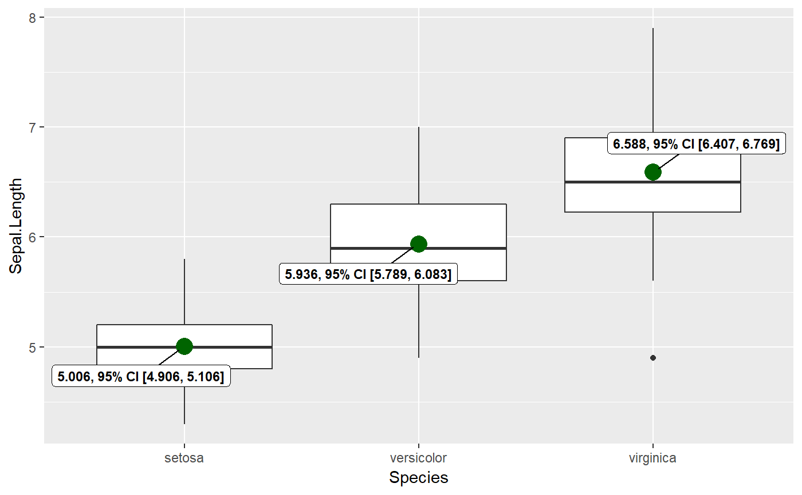

Adding labels for mean values.
mean_ggrepel(plot, mean.data, mean.size = 5, mean.color = "darkred", mean.label.size = 3, mean.label.fontface = "bold", mean.label.color = "black", inherit.aes = TRUE, ...)
| plot | A |
|---|---|
| mean.data | A dataframe containing means for each level of the factor.
The columns should be titled |
| mean.size | Point size for the data point corresponding to mean
(Default: |
| mean.color | Color for the data point corresponding to mean (Default:
|
| mean.label.size | Aesthetics for
the label displaying mean. Defaults: |
| mean.label.fontface | Aesthetics for
the label displaying mean. Defaults: |
| mean.label.color | Aesthetics for
the label displaying mean. Defaults: |
| inherit.aes | If |
| ... | Additional arguments. |
# this internal function may not have much utility outside of the package set.seed(123) library(ggplot2) # make a plot p <- ggplot(data = iris, aes(x = Species, y = Sepal.Length)) + geom_boxplot() # get a dataframe with means mean_dat <- ggstatsplot:::mean_labeller( data = iris, x = Species, y = Sepal.Length, mean.ci = TRUE, k = 3 ) # add means ggstatsplot:::mean_ggrepel( plot = p, mean.data = mean_dat, mean.color = "darkgreen" )